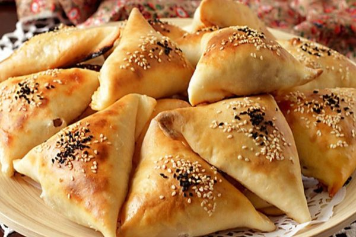

Samsa

Samsa is a traditional dish in Krygyzstan.
Ingredients:
- flour
- water
- milk
- salt
- yeast
- potato
- beef
- onion
Steps:
- Mix flour, water, milk, salt, and yeast to make the dough.
- Let the dough rest for 30 minutes.
-
Prepare the filling with potatoes, minced beef, and chopped onions.
- Roll out the dough and cut it into circles.
-
Place the filling on one half of each circle and fold over to form a
pocket.
- Place in the oven and bake until golden brown.
- Serve hot with your favorite dipping sauce.
Home